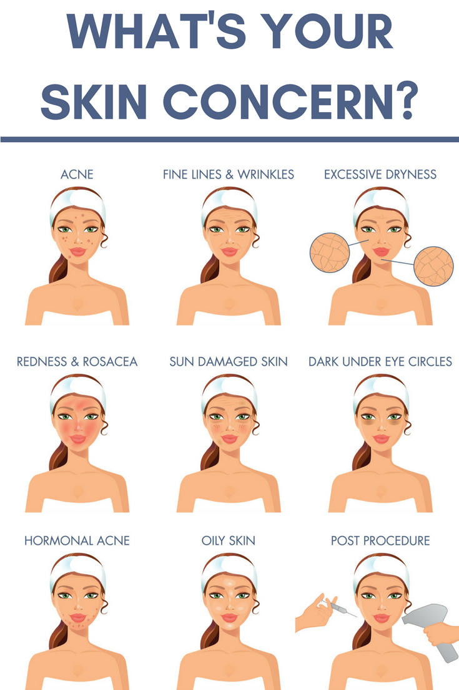

Here is a slight breakdown of skincare concerns and their causes.
Types of Skincare Concerns
Acne:Acne occurs when hair follicles are plugged with oil and/or dead skin cells. Acne causes the
development of whiteheads, blackheads, and/or pimples. The development of acne is common between teenagers and young
adults.
The causes of acne are the following: excess oil production, hair follicles clogged by oil and/or dead skin cells,
bacteria, and inflammation.
Acne Scars:Acne scars are textural changes that occur on the skin because of acne. Acne scars can appear on the face as damage to the individual’s skin texture. The causes of acne scars are the following: destroyed skin tissue that is not regenerated during the skin’s healing process of acne.
Dark Spots: Dark spot can be known also as skin age spots or sunspots. What causes dark spots is that the skin produces more melanin than normal in certain areas of the skin. Dark spots can range from light brown to dark brown depending on the individual’s skin.
A few more causes of dark spots are the following:
- Sun Damage
- Hormonal Changes
- Medication Side Effects
- Inflammation
- Irritation
Uneven Texture: Uneven skin texture is the most common result of excess dead skin cells on the surface of the skin. Skin texture is about the look and the feel of the skin's surface. When there is uneven skin texture, it can feel rough, dry, and not enough care for the skin.
The individual’s environment plays a significant role in their skin texture due to the following:
- Sun Exposure
- Pollution
- Air
- Dirt
- Chemicals
- Aging
- and the list goes on
The photo to the right exemplifies how to layer skincare products. You can use a cleanser, serum, toner, moisterizer and most importantly sunscreen! This is an important road map to begin to combat all the various skincare concerns.
The photo shows the following steps:- Removing Makeup
- Cleanse
- Exfoliate
- Toner
- Serum
- Moisturize
- Eye Cream
- Apply Sunscreen